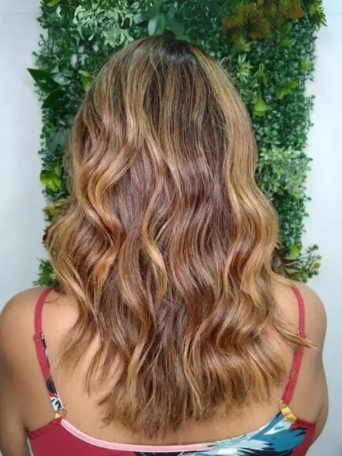
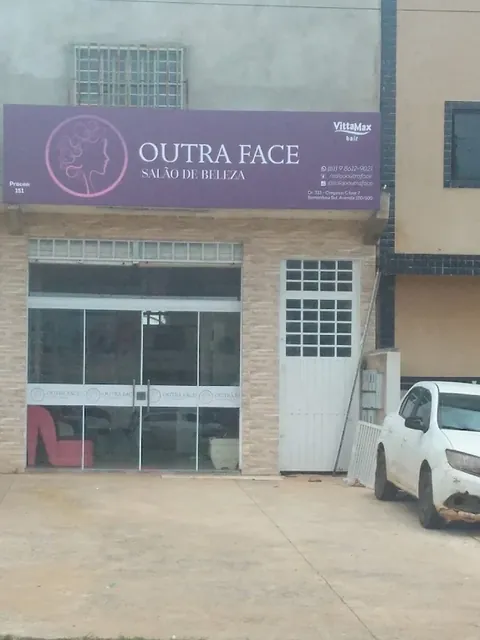
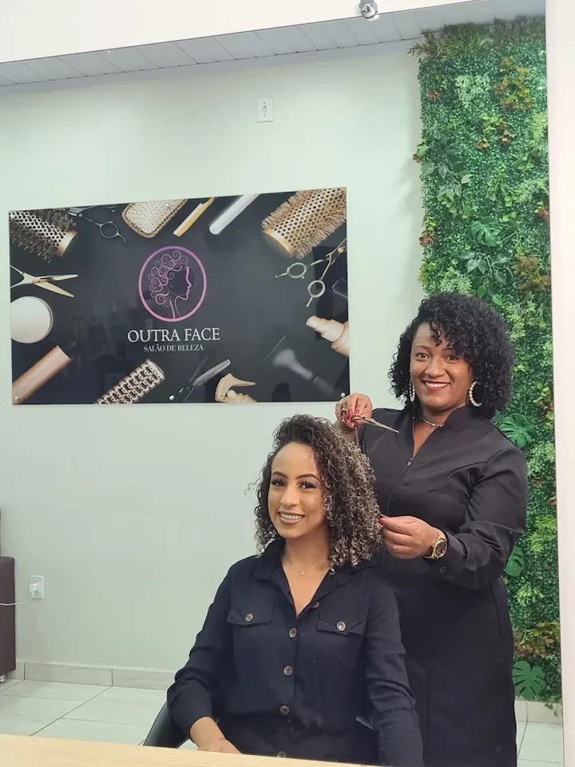

O salão da Priscila Cardoso em Samambaia, com nota 4,8 no Google. Chame no WhatsApp e combine o seu horário.
Cachos, ondas e mechas feitos no salão, e a fachada para você chegar sem erro.


Tudo pelo WhatsApp, com a mensagem já pronta.
Toque no botão e a mensagem já vai escrita para Priscila Cardoso – Salão Outra Face.
Escolha o melhor momento dentro do horário de atendimento.
QS 112 – Samambaia, Brasília – DF, 72302-540
Como chegar →
Priscila Cardoso – Salão Outra Face aparece no Google como salão de beleza, com nota 4,8 em 35 avaliações. Fica em QS 112 – Samambaia, Brasília – DF, 72302-540.
Para saber mais sobre o salão e combinar o seu atendimento, é só chamar no WhatsApp (61) 98612-9021.
Cadastre-se e, no dia do seu aniversário, você recebe uma mensagem especial de Priscila Cardoso – Salão Outra Face no WhatsApp, com um possível desconto, conforme as regras definidas pelo próprio negócio.
Fale com Priscila Cardoso – Salão Outra Face pelo WhatsApp e combine o melhor dia para você.
(61) 98612-9021 · WhatsApp
@salaooutraface
O mapa é do Google e só carrega quando você toca.